Бір өлшемді массив элементтердің орнын ауыстыру. Бір өлшемді массив элементтерін сұрыптау
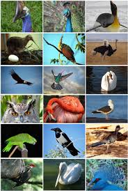1-мысал. Торғайлар.
Әрбір ұяда бірнеше торғайлар отыр. Ең көп отырған торайлар мен ең аз
отырған торғайлардың орнын ауыстыратын программа құрайық. Ұялар санын
пайдаланушы енгізеді.
Нұсқаулық. Бір өлшемді
массив элементтерінің максимумын және минумымын табамыз, содан кейін екеусінің
орнын көмекші айнымалы арқылы ауыстырамыз.
Есептің Python программалау
тіліндегі программа коды 1, 2-суреттерде берілген.
|
Python программалау тіліндегі программа коды |
|
n=5 print("Арбир уядагы торгайларды енгіз") a=[int(input()) for i in range(n)] max1=max(a) #Питонда массивтин ен улкен элементін табатын функция min1=min(a) #Питонда массивтин ен кіші элементін табатын функция print('max=',max1) print('min=',min1) i=a.index(max1) #Питонда массивтин максимум элементтінін индексін табу j=a.index(min1) #Питонда массивтин минимумын элементтінін индексін
табу a[i], a[j]=a[j],a[i] #Максимум
мен минимумнын орнын ауыстыру print("Орны ауыскан торгайлар",a) |
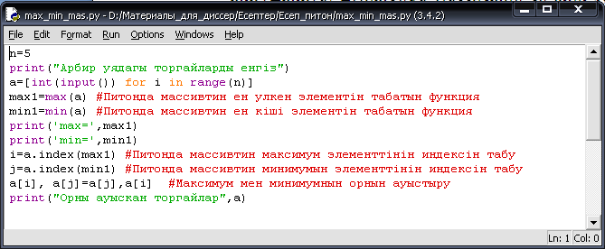
Сурет
1 - Ұядағы ең көп және ең аз торғайлардың орнын ауыстыру
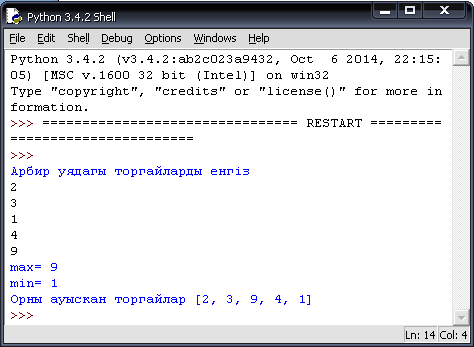
Сурет
2
- Алынған нәтиже
Есептің С++ программалау тіліндегі программа коды 3, 4 -суреттерде берілген.
|
|
С++ программалау
тіліндегі программа коды |
|
1 2 3 4 5 6 7 8 9 10 11 12 13 14 15 16 17 18 19 20 21 22 23 24 25 26 27 |
#include <iostream> #include <stdio.h> #define n 5 using namespace std; int main(int argc, char** argv) { int i,j,max,min, min1,max1; int a[n],k; cout<<"Arbir uiadagi torgailar sanin engiz\n"; for (i=0; i<n; i++) { cout<<"a["<<i<<"]="; cin>>a[i];} max=a[0]; min=a[0]; for (i=0; i<n; i++) if (a[i]>max) {max=a[i]; max1=i;} else if (a[i]<min) {
min=a[i]; min1=i;} k=a[max1]; a[max1]=a[min1]; a[min1]=k; cout<<"Orni auiskan torgailar sani = "; for (i=0; i<n; i++) cout<<a[i]<<" "; cout<<"\n\n"; cout<<"Max="<<max<<"\n\n"; cout<<"Min="<<min; system("pause"); } |
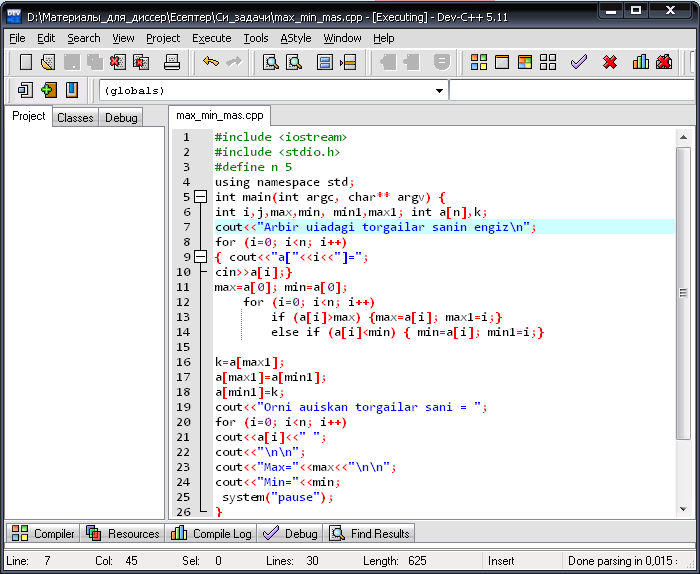
Сурет
3 - С++ программалау тілінде ұядағы ең көп және ең
аз торғайлардың орнын ауыстыру
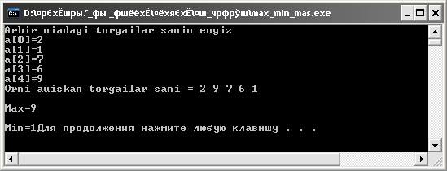
Сурет
4 - Алынған нәтиже
Қазақтың
осы күнгі ою-өрнектерін қарт шеберлер екіге бөліп қарайды. Біріншісі, қазақ
халқының өзіне тән ертеден келе жатқан ұлттық оюлары. Екіншісі, басқа
халықтардан ауысқан және интернацоиналды ою-өрнектер. Ертедегі қазақ оюларын
мазмұн жағынан іріктесек, негізінен үш түрлі ұғымды бейнелейді. Олар біріншіден
мал өсіру мен аңшылықты, екіншіден жер-су, көшіп-қону көріністерін, үшіншіден
күнделікті өмірде кездесетін әртүрлі заттардың сыртқы бейнесін береді. Қазақтың
ұлттық ою-өрнегіндегі бір ерекшелік – осы түрлі ұғымның қайсысын бейнелегенде
де, ұлттық ою-өрнектің негізі болған мүйіз оюы үнемі араласып отырады.
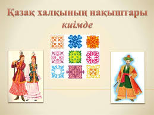2-мысал. Қазақтың ою-өрнектері. Қазақтың бірнеше
оюларының аттары берілген. Оюлардың атауларын кері ретпен шығаратын программа
құрайық.
Нұсқаулық.
Бір өлшемді массив элементтерінің кері бағытта экранда шығарамыз.
Есептің Python программалау
тіліндегі программа коды 5, 6 -суреттерде берілген.
|
Python программалау тіліндегі программа коды |
|
o=["Жыланбас", "Муйіз",
"Кобелек", "Ит куйрык", "Кошкар муйіз",
"Кус канаты", "Кус тумсык", "Оркеш",
"Сынык муйіз", "Туйетабан", "Торткулак",
"Туйемойын", "Тандай" ] o=o[::-1] #Тізімді кері багытта шыгару print(o) |
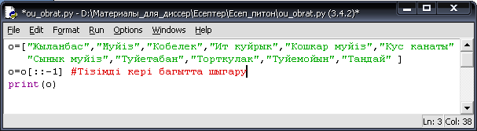
Сурет
5 - Оюдың атауларын кері бағытта шығару
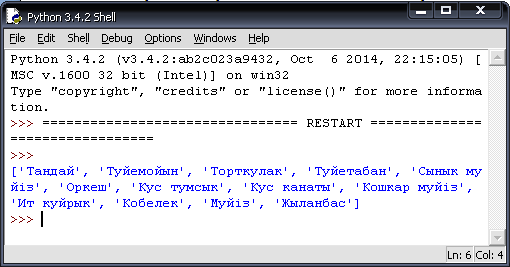
Сурет
6
- Алынған
нәтиже
Есептің С++ программалау
тіліндегі программа коды 7, 8 -суреттерде берілген.
|
|
С++ программалау
тіліндегі программа коды |
|
1 2 3 4 5 6 7 8 9 10 11 12 13 14 |
#include <iostream> #include <cstring> #include <stdlib.h> using namespace std; int main(int argc, char** argv) { string b[25]; int
i; cout <<"Ou attarin engiz = "; for (i=0; i<11; i++) cin>>b[i]; cout<<"Keri retpen
shigaru =\n\n"; for (i=10; i>=0; --i) cout<<"b["<<i<<"]="<<b[i]<<"\n"; system("pause");} |
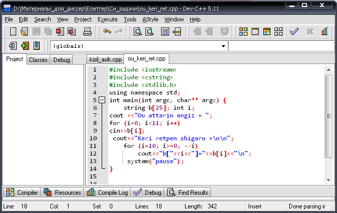
Сурет
7 - Оюдың
атауларын кері бағытта шығару
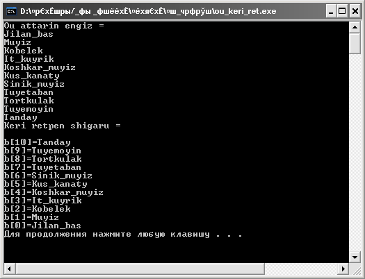
Сурет
8 - Алынған
нәтиже
Қазақтың
музыкалық аспаптары — ғасырлар бойы ұрпақтан-ұрпаққа мирас болып келе жатқан
мәдени мұра. Қазақтың музыкалық аспаптарының өзіне тән үні (әуенділігі мен
саздылығы), орындаушылық дәстүрі бар. Музыка аспаптарын жаугершілік заманда
халыққа хабар бергенде, аң үркіткенде, әнші-күйшілер ән-күй орындағанда,
бақсылар сарнағанда пайдаланып отырған. Мысалы, жау шапқанда елге хабар беру
үшін үрмелі аспаптарды (дабыл, дауылпаз, ұран, керней); бақсылар сарнағанда —
даңғара, асатаяқ, шаңқобызды; әнші-күйшілер өлең-жыр, терме-ән айтқанда немесе
күй шерткенде — домбыра, сыбызғы, сырнай, қылқобыз сияқты шекті аспаптарды
пайдаланғап. Музыка аспаптары кептірілген қайың, шырша, емен ағаштарынан,
қамыстан, сазбалшықтан, малдың терісі мен сүйегінен, мүйізінен, қылынан
жасалған.

3-мысал. Қазақтың ұлттық аспаптары. Қазақ
халқының бірнеше ұлттық аспаптары ретімен берілген. Ұлттық аспаптардың атауын К
позициясынан бастап оңға жылжытып экранға шығаратын программа құрайық.
Есептің Python программалау
тіліндегі программа коды 9, 10 -суреттерде берілген.
|
Python программалау тіліндегі программа коды |
|
steps=int(input("K позициясын енгіз ",)) n=int(input("Улттык аспаптар санын енгіз= ",)) print("Улттык аспаптардын атын енгіз") lst=[(input()) for i in range(n)] lst=lst[steps:]+lst[:steps] print(lst) |
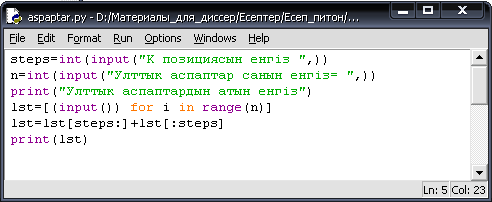
Сурет 9 - К позициясынан
кейінгісінен бастап атауларды оңға
жылжыту
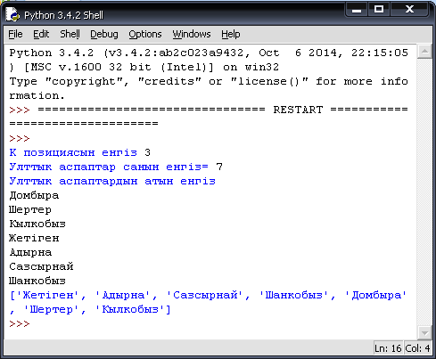
Сурет 10 - Алынған нәтиже
Есептің
С++ программалау тіліндегі программа коды 11, 12 -суреттерде берілген.
|
|
С++ программалау тіліндегі программа коды |
|
1 2 3 4 5 6 7 8 9 10 11 12 13 14 15 16 17 18 |
#include <iostream> #include <cstring> #include <stdlib.h> using namespace std; int main(int argc, char** argv) { int
i,k,n=7; string b[n]; cout
<<"K pozisyasin engiz = ";
cin>>k; cout
<<"Ulttik aspaptar atin engiz = "; for
(i=0; i<n; i++)
cin>>b[i]; cout<<"K-pozisyasinan bastap
shigaru =\n\n"; for
(i=k-1; i<n; i++) cout<<b[i]<<"\n"; for
(i=0; i<k-1; i++) cout<<b[i]<<"\n"; system("pause"); } |
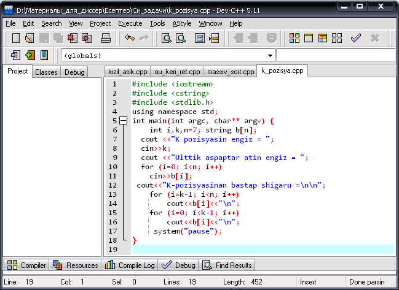
Сурет
11
- С++
программалау тілінде К позициясынан бастап атауларды оңға жылжыту
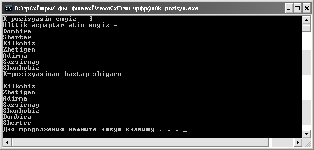
Сурет
12
- Алынған
нәтиже
Қазақ халқы ерте заманнан-ақ
табиғатқа етене жақын өскендіктен ауа райын сол табиғат құбылыстары мен
жан-жануарлардың тыныс-тіршілігіне қарап болжағаны белгілі. Олар ерте кезден
ауа райын алдын ала бақылап, мал-жанның түрлі апаттардан аман сақтау үшін ерте
қамданып отырған. Ауа райын болжаушылар табиғат құбылыстарын бақылап, күн
есептеудің дәстүрлі әдістерін құпия ұстаған
4-мысал. Қараша айындағы ауа-райы болжамы. Әр
күннің ауа-райының канша градуска ыстык немесе суық екенін енгіземіз. Көпіршікті
сұрыптау әдісін пайдалана отырып, қараша айындағы ауа-райын сұрыптайтын
программа құрайық.
Есептің Python программалау
тіліндегі программа коды 13, 14 -суреттерде берілген.
|
Python программалау тіліндегі программа коды |
|
import array as arr n=int(input("Кун
санын енгіз = ")) mass=arr.array("i") for i in range(n): print(i+1, end="-i") mass.append(int(input("Ауа-райын
градуста енгіз = "))) print("Ар
куннин енгізілген ауа-райы=", end=" ") for i in range(n): print(mass[i], end=" ") print("\n") noSwap=True num=n-1 while num>0 and
noSwap: noSwap = False for i in range(num): if mass[i]>mass[i+1]: noSwap=True t=mass[i] mass[i]=mass[i+1] mass[i+1]=t num=num-1 print("Сурыпталган
градустар = ",end=" ") for i in range(n): print(mass[i], end=" ") |
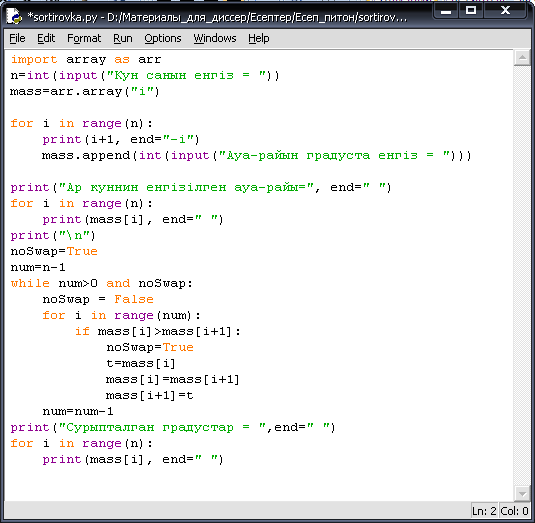
Сурет 13 - Алматы
қаласы бойынша қараша айындағы арау райы болжамы
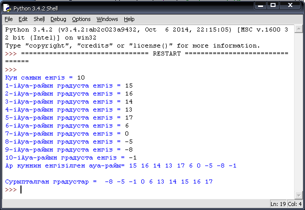
Сурет
14
- Алынған
нәтиже
Есептің
С++ программалау тіліндегі программа коды 15, 16 -суреттерде
берілген.
|
|
С++ программалау
тіліндегі программа коды |
|
1 2 3 4 5 6 7 8 9 10 11 12 13 14 15 16 17 18 19 20 21 22 23 24 25 26 |
#include <iostream> #include <cstring> #include <stdlib.h> using namespace std; int main(int argc, char** argv) { int n=10, a[n],i,k,l;; cout<<"Karasha
aining aua-rayin engiz \n"; for (k=0; k<n; k++) cin>>a[k]; cout<<"Siz engizgen
aua-rayi \n"; for (k=0; k<n; k++)
cout<<a[k]<<" "; for (i=0;i<n-1;i++) {for (k=0; k<n-1; k++) { if (a[k]>a[k+1]) { l=a[k]; a[k]=a[k+1]; a[k+1]=l; } } } cout<<"\n\n"; cout<<"Suriptalgan
aua-rayi \n"; for (k=0; k<n; k++) cout<<a[k]<<"
"; system("pause"); } |
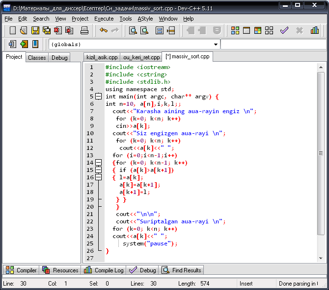
Сурет
15 - С++
программалау тіліндегі Алматы қаласы бойынша қараша айындағы арау райы болжамы
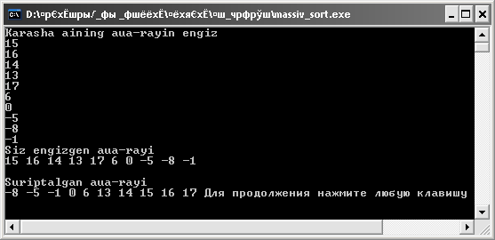
Сурет
16 - Алынған
нәтиже